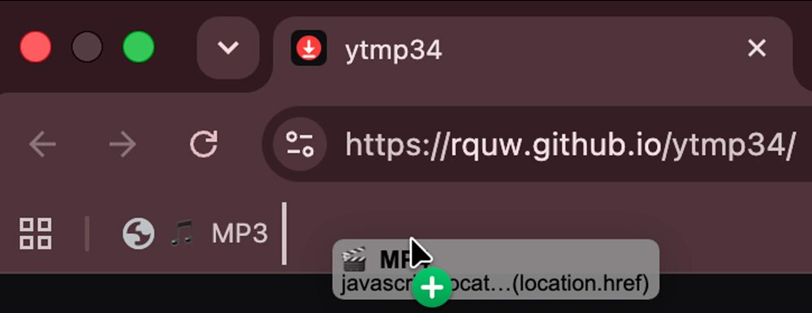
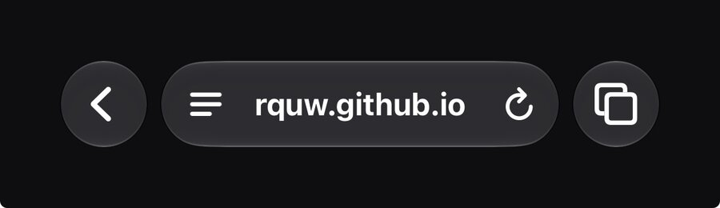
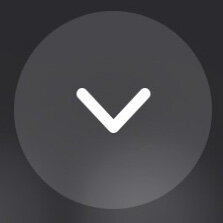
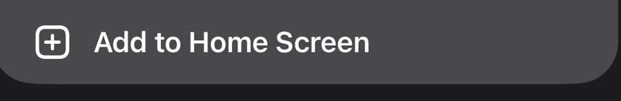

ytmp34
OFFLINE
I'm so sorry, but the server is currently down. Chances are I'm working on it right now.
Please send an E-Mail to rquw@icloud.com if you see this!
Shortcuts
Drag 🎵 MP3 and 🎬 MP4 to your bookmarks bar. Now you can click them while on any YouTube Video and it instantly starts converting and downloading!

Don't see a bookmarks bar? Press Ctrl + Shift + B.
Add this site to your home screen!
- Tap the menu button in the address bar

- Tap Share
- Tap the arrow to see more

- Tap Add to Home Screen

Add this site to your home screen!
- In Chrome, tap ⋮ in the top right corner
- Tap Add to Home screen, then Install
- Done! You can now also share videos straight from the YouTube app: tap Share under a video and pick ytmp34
·